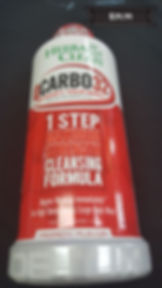

Detox / Cleanses
Q Carbo 32
Q Carbo 32 Liquid Tropical 32 oz Liquid
Description
Herbal Clean QCARBO32 is the easy one-step formula for people with higher toxin levels or larger body mass. This advanced super detoxifying solution provides the satisfaction and reliability you expect from a MAXIMUM STRENGTH cleanser.
Today's lifestyles expose us to numerous pollutants from many sources including the air we inhale, water we drink and food we ingest. It is important to eliminate these toxins safely and with peace of mind. Herbal Clean QCARBO32 confidently provides a trusted cleanse for your improved lifestyle.
Herbal Clean has been the trusted brand in Detox since 1990 providing effective products that help you to maintain a healthy lifestyle and aid in your body's natural cleansing process. As the pioneer of total body cleansers, millions of people like you have relied on Herbal Clean with great satisfaction.
Suggested Use As a dietary supplement How To Detox Simply shake the bottle and drink the entire 32 oz. contents at a comfortable yet consistent pace. Part of the detox process is frequent urination during the first hour after consuming the product, this is how your body expels toxins. Now your body has achieved the optimum level of cleanse on the very same day. Important Tips When cleansing the system, it is important to drink as much water as possible on a daily basis. Do not use any over the counter drugs, large quantities of vitamins, alcohol, acidic liquids such as vinegar or juices, nicotine, caffeine or other unwanted toxins prior to the use of this product. Do not eat any large meals before using this product. - Or as directed by your healthcare professional.